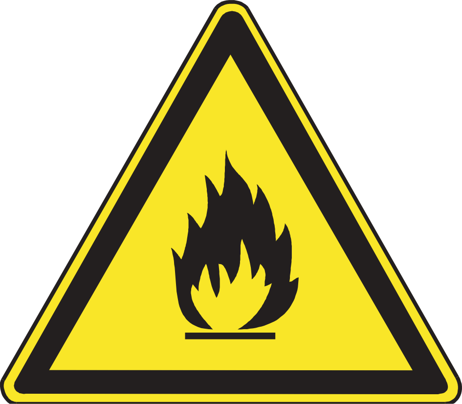
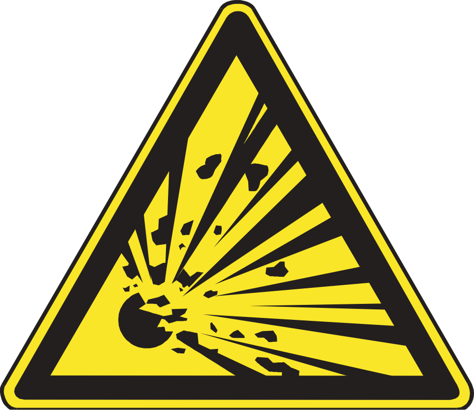

<div class="r-hstack justify-center"> <div class="tooltip" data-id="box1" style="background: #999; width: 200px; height: 200px; margin: 10px; border-radius: 5px;"><span class="tooltiptext-b-8">Medan listrik adalah ruang atau daerah di sekitar suatu muatan listrik, di mana jika ada muatan listrik lainnya dalam ruang ini akan mengalami gaya Coulomb atau gaya elektrostatis (tarik atau tolak). </span></div> <div class="tooltip" data-id="box2" style="background: #999; width: 200px; height: 200px; margin: 10px; border-radius: 5px;"><span class="tooltiptext-t-8">Medan listrik adalah ruang atau daerah di sekitar suatu muatan listrik, di mana jika ada muatan listrik lainnya dalam ruang ini akan mengalami gaya Coulomb atau gaya elektrostatis (tarik atau tolak). </span></div> <div class="tooltip" data-id="box3" style="background: #999; width: 200px; height: 200px; margin: 10px; border-radius: 5px;"><img src="../resources/images/c3.png"><span class="tooltiptext-l-8">Medan listrik adalah ruang atau daerah di sekitar suatu muatan listrik, di mana jika ada muatan listrik lainnya dalam ruang ini akan mengalami gaya Coulomb atau gaya elektrostatis (tarik atau tolak). </span></div> <div class="tooltip" data-id="box4" style="background: #999; width: 200px; height: 200px; margin: 10px; border-radius: 5px;"><img src="../resources/images/c4.png"><span class="tooltiptext-r-8">Medan listrik adalah ruang atau daerah di sekitar suatu muatan listrik, di mana jika ada muatan listrik lainnya dalam ruang ini akan mengalami gaya Coulomb atau gaya elektrostatis (tarik atau tolak). </span></div> </div>